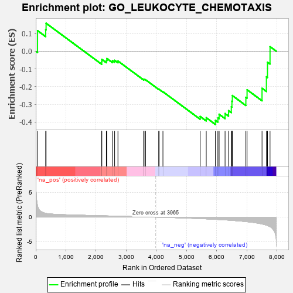
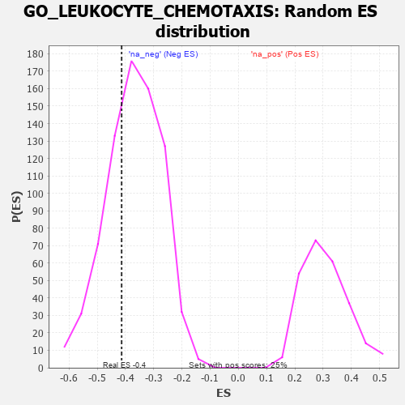

| | | Dataset | 7d |
| Phenotype | NoPhenotypeAvailable |
| Upregulated in class | na_neg |
| GeneSet | GO_LEUKOCYTE_CHEMOTAXIS |
| Enrichment Score (ES) | -0.41359264 |
| Normalized Enrichment Score (NES) | -1.1223876 |
| Nominal p-value | 0.30923694 |
| FDR q-value | 0.72876537 |
| FWER p-Value | 1.0 |
Table: GSEA Results Summary

Fig 1: Enrichment plot: GO_LEUKOCYTE_CHEMOTAXIS
Profile of the Running ES Score & Positions of GeneSet Members on the Rank Ordered List
| PROBE | GENE SYMBOL | GENE_TITLE | RANK IN GENE LIST | RANK METRIC SCORE | RUNNING ES | CORE ENRICHMENT | | 1 | RAC2 | | | 60 | 2.442 | 0.1162 | No |
| 2 | NUP85 | | | 329 | 0.772 | 0.1216 | No |
| 3 | DAPK2 | | | 343 | 0.754 | 0.1582 | No |
| 4 | SYK | | | 2186 | 0.278 | -0.0597 | No |
| 5 | C1QBP | | | 2189 | 0.278 | -0.0459 | No |
| 6 | ANO6 | | | 2339 | 0.255 | -0.0517 | No |
| 7 | MIF | | | 2357 | 0.252 | -0.0411 | No |
| 8 | SRP54 | | | 2544 | 0.220 | -0.0533 | No |
| 9 | VAV3 | | | 2614 | 0.210 | -0.0514 | No |
| 10 | SLIT2 | | | 2724 | 0.195 | -0.0552 | No |
| 11 | GPR18 | | | 3578 | 0.063 | -0.1594 | No |
| 12 | MAPK3 | | | 3589 | 0.062 | -0.1576 | No |
| 13 | SBDS | | | 3640 | 0.053 | -0.1612 | No |
| 14 | CSF1 | | | 4074 | -0.019 | -0.2147 | No |
| 15 | PDE4B | | | 4089 | -0.022 | -0.2153 | No |
| 16 | GBF1 | | | 4215 | -0.044 | -0.2289 | No |
| 17 | LYST | | | 5448 | -0.307 | -0.3685 | No |
| 18 | WNK1 | | | 5650 | -0.362 | -0.3754 | No |
| 19 | CXCR5 | | | 5954 | -0.456 | -0.3905 | Yes |
| 20 | RAC1 | | | 6036 | -0.484 | -0.3762 | Yes |
| 21 | CALR | | | 6077 | -0.499 | -0.3559 | Yes |
| 22 | STK39 | | | 6274 | -0.563 | -0.3521 | Yes |
| 23 | TRPM4 | | | 6390 | -0.612 | -0.3356 | Yes |
| 24 | DYSF | | | 6481 | -0.654 | -0.3138 | Yes |
| 25 | DPP4 | | | 6501 | -0.663 | -0.2825 | Yes |
| 26 | TRPV4 | | | 6515 | -0.668 | -0.2503 | Yes |
| 27 | DNM1L | | | 6963 | -0.913 | -0.2603 | Yes |
| 28 | CCR2 | | | 7003 | -0.939 | -0.2176 | Yes |
| 29 | PPIB | | | 7499 | -1.396 | -0.2092 | Yes |
| 30 | MCU | | | 7644 | -1.637 | -0.1444 | Yes |
| 31 | TRPM2 | | | 7680 | -1.712 | -0.0620 | Yes |
| 32 | PDE4D | | | 7764 | -1.944 | 0.0261 | Yes |
Table: GSEA details [plain text format]

Fig 2: GO_LEUKOCYTE_CHEMOTAXIS: Random ES distribution
Gene set null distribution of ES for GO_LEUKOCYTE_CHEMOTAXIS